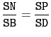

suivant: Exercice 3 prolongement de
monter: Figures et preuves d''exercices
précédent: Exercice 1
Table des matières
Index
Soit SABCD une pyramide de sommet S dont la base ABCD est un
carré de centre O et tel que SO est perpendiculaire au plan
ABCD.
Le plan passant par C et perpendiculaire à SA coupe SA,
SB, SC respectivement en M, N et P.
Montrer que NP est parallèle à BD.
Pour faire la figure, on tape :
//dessin exo2
A:=point(2,2,0);
B:=point(-2,2,0);
C:=point(-2,-2,0);
D:=point(2,-2,0);
S:=point(0,0,4);
polyedre(S,A,B,C,D);
Q:=perpendiculaire(C,droite(S,A));
M:=head(inter(Q,droite(S,A)));
N:=head(inter(Q,droite(S,B)));
P:=head(inter(Q,droite(S,D)));
d1:=droite(N,P);
d2:=droite(B,D);
est_parallele(d1,d2)
Pour faire la démonstration avec Xcas, on peut taper en supposant
que le plan du carré est le plan Oxy :
// demo exo2
A:=point(a,b,0);
B:=point(c,f,0);
d:=affixe(rotation(a+i*b,pi/2,point(c+i*f)));
d1:=re(d);
d2:=im(d);
D:=point(d1,d2,0);
C:=normal(B+(D-A));
S:=point((c+d1)/2,(d+d2)/2,g);
Q:=perpendiculaire(C,droite(S,A));
M:=head(inter(Q,droite(S,A)));
N:=normal(head(inter(Q,droite(S,B))));
P:=normal(head(inter(Q,droite(S,D))));
est_parallele(droite(D,B),droite(N,P));
On obtient :
1
mais on peut simplifier les calculs, car on peut choisir les axes pour avoir A
sur Ox, on tape alors :
// demo exo2
A:=point(a,0,0);
B:=point(0,a,0);
C:=point(-a,0,0);
D:=point(0,-a,0);
S:=point(0,0,b);
Q:=perpendiculaire(C,droite(S,A));
M:=head(inter(Q,droite(S,A)));
N:=normal(head(inter(Q,droite(S,B))));
P:=normal(head(inter(Q,droite(S,D))));
est_parallele(droite(D,B),droite(N,P));
On obtient :
1
La démonstration géométrique :
Les triangles 0AS, 0BS et 0DS rectangles en 0 sont
égaux puisque 0A=OB=0D en tant que demi diagonale d'un carré.
Donc les arêtes SA SB et SD sont égales ainsi que
les triangles isocéles SAB et SAD (la pyramide est donc
régulière).
Les triangles MSN et MSP rectangles en M sont égaux
(même côté MS et leurs angles S sont égaux), donc
SN=SP.
Puisque SB=SD, on a donc :

ce qui montre d'après le théorème de Thalès que
NP est parallèle à BD.
suivant: Exercice 3 prolongement de
monter: Figures et preuves d''exercices
précédent: Exercice 1
Table des matières
Index
Documentation de giac écrite par Renée De Graeve